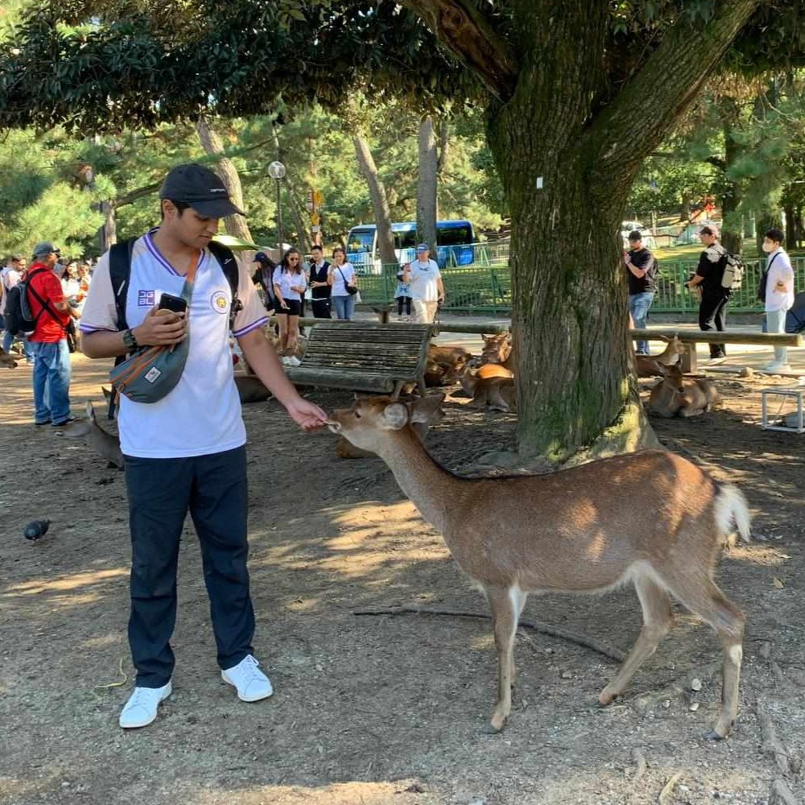

// about
About Me
I graduated from the University of Sydney with a Bachelor of Economics majoring in Economics and Econometrics. I pivoted mid-degree to an econometrics major (from international business) after discovering how much I enjoyed working on quantitative approaches to policy evaluation.
I'm interested in how data and measurement can drive genuine, positive outcomes for people and places. I currently work as an analyst in the social vertical of the group sustainability team at Stockland, focusing on social impact strategy and measurement in the property sector.
I like listening to music (ambient, techno, synthwave, metal), reading (Brandon Sanderson, sci-fi, economics), hiking, cycling, and woodworking.
